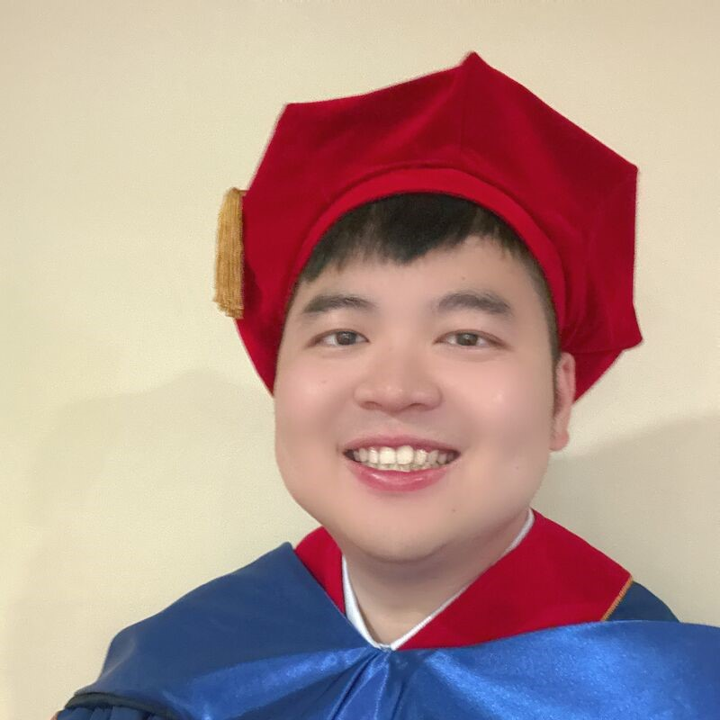
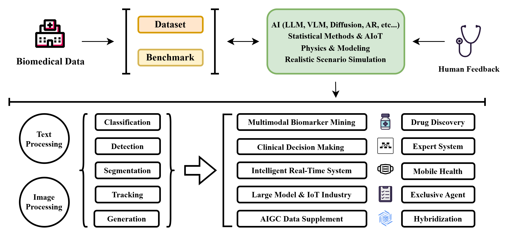
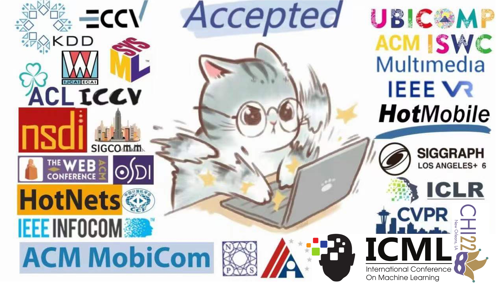

𝑪𝒉𝒆𝒏𝒈 𝑯𝒖𝒂𝒏𝒈, 𝑷𝒉.𝑫. 🍊
🚀 I am currently a Postdoctoral Research Fellow at the O'Donnell School of Public Health, UT Southwestern Medical Center, and concurrently, serve as an Assistant Professor in the Department of Computer Science at Southern Methodist University.
I received my Ph.D. degree from Southern Methodist University on November 18, 2025. I am the first, and also currently, the only person in the university history to complete the Ph.D. program in just two years. Prior to that, I received my master's degree from the Chinese University of Hong Kong in 2022 and my bachelor's degree from University of Electronic Science and Technology of China in 2020.
✨✨✨ I am currently on the job market and welcome any opportunities or discussions. Please feel free to reach out if there is a potential fit. ✨✨✨



My long-term vision is to advance AI for Health Care by building clinically grounded, trustworthy, and multimodal intelligence systems. I frame this mission through the Hippocrates paradigm:
(1) Biomarker Intelligence
Discovering disease-specific biomarkers from multimodal medical data, like fundus, OCT, OCTA, and clinical
metadata—through robust and interpretable AI.
(2) Clinically Aligned Generation
Developing multimodal report-generation and decision-support models that integrate imaging, physiology,
and language to produce clinically reliable outputs.
(3) Autonomous Diagnostic System
Building agentic medical AI systems with reasoning, memory, and self-improving capabilities to support
longitudinal disease progression modeling and early intervention.

Research Map: Schematic Overview of My Research Vision
News
- [2026/05] 2 papers was accepted by IEEE PRAI!
- [2026/04]🔥🔥🔥 3 papers was accepted by IEEE 48th EMBC!
- [2026/01]🔥🔥🔥 1 paper was accepted by IEEE 51st ICASSP!
- [2026/01] 1 paper was accepted by BNNIO 2026!
Education
Southern Methodist University, USA
Ph.D. in Computer Science • Sep. 2023 - Dec. 2025
Advisor: Prof. Jia Zhang Research Direction: Ophthalmology AI
Advisor: Prof. Jia Zhang Research Direction: Ophthalmology AI
Work
University of Texas Southwestern Medical Center, USA
Postdoctoral Fellow
Department of Health Data Science & Biostatistics • Jun. 2026 - Now
Advisor: Prof. Wenqi Shi Research Direction: Medical AI
Department of Health Data Science & Biostatistics • Jun. 2026 - Now
Advisor: Prof. Wenqi Shi Research Direction: Medical AI
Research Associate
Department of Ophthalmology • Sep. 2024 - May. 2026
Advisor: Dr. Karanjit Kooner & Prof. Jui-Kai Wang Research Direction: OCTA Imaging
Department of Ophthalmology • Sep. 2024 - May. 2026
Advisor: Dr. Karanjit Kooner & Prof. Jui-Kai Wang Research Direction: OCTA Imaging
Research Scientist
Department of Ophthalmology • Jun. 2024 - Aug. 2024
Advisor: Dr. Karanjit Kooner Research Direction: Medical Imaging in Glaucoma
Department of Ophthalmology • Jun. 2024 - Aug. 2024
Advisor: Dr. Karanjit Kooner Research Direction: Medical Imaging in Glaucoma
Talk
From Digital Clones to Next-Generation AI Systems
SoftStone Group Headquarters • Jan. 17. 2026, 16:30 pm - 18:00 pm
Building 16, No. 10 Xibeiwang East Road, Haidian District, Beijing 100193, China
Building 16, No. 10 Xibeiwang East Road, Haidian District, Beijing 100193, China
Academic Service
Chair / Co-Chair
IEEE PRAI '25/26
IEEE EMBC '26
Committee
IEEE PRAI '25/26
AAAI '26/27
Conference Reviewer
CVPR '25/26
MICCAI '25/26
ICME '25/26
AAAI '26/27
IEEE PRAI '25/26
IEEE BIBE '25
ICONIP '25
IEEE EMBC '26
NLPCC '26
Journal Reviewer
IEEE Journal of Translational Engineering in Health and Medicine
American Journal of Diagnostic Imaging
Journal of Computer Sciences and Informatics
The Journal of Supercomputing
Digital Health
IEEE Journal of Biomedical and Health Informatics
Frontiers in Radiology
Personal Interest
- Anime: Dragon Ball Series
- Hobby: Skiing, Fitness, Off-Roading, Hunting, Traveling
- Motto: 我来完成耶稣基督未竟的事业！
